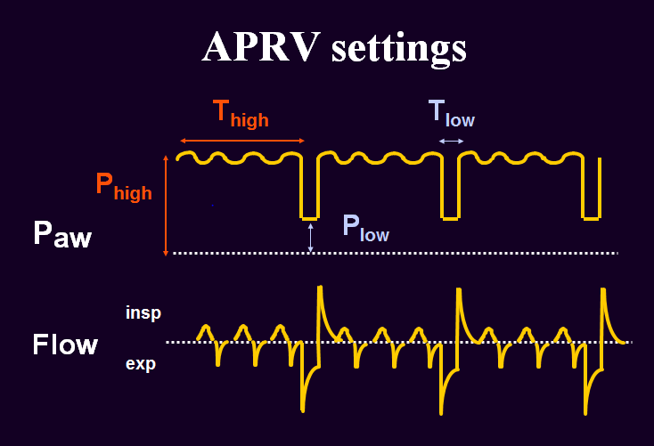

APRV is a spontaneous breathing mode that uses high mean airway pressure and periodic timed pressure releases to enhance alveolar recruitment),
redistribute lung volumes and improve gas exchange in patients with pediatric acute respiratory distress syndrome and refractory hypoxemia. APRV is
only
effective when the patient is spontaneously breathing.
- Unlike conventional, all APRV settings may impact ventilation and oxygenation
-
P
HIGH
: Pressure high allows “super CPAP” that aids in alveolar recruitment during spontaneous breathing
-
P
LOW
: Pressure low is the release pressure that allows the ventilator valve to release pressure and provide exhalation of gases (Tidal volume = ∆P
HIGH
- P
LOW
)
-
T
HIGH
: Time high determines the duration that the patient can breath at P
HIGH
and the number of pressure releases per minute (respiratory rate)
-
T
LOW
: Determines the duration that the patient breaths at P
LOW

Spontaneous breathing efforts result in the generation of negative intra thoracic pressures which may have the following benefits:
- Re-expansion of dependent “diseased” lung segments
- Improve pulmonary blood flow and decreased V/Q mismatch
- Improve cardiac output
Efforts should be made to augment spontaneous breathing efforts in order to be successful with this mode (ie removed paralytics, reduced sedation, provide Diamox)